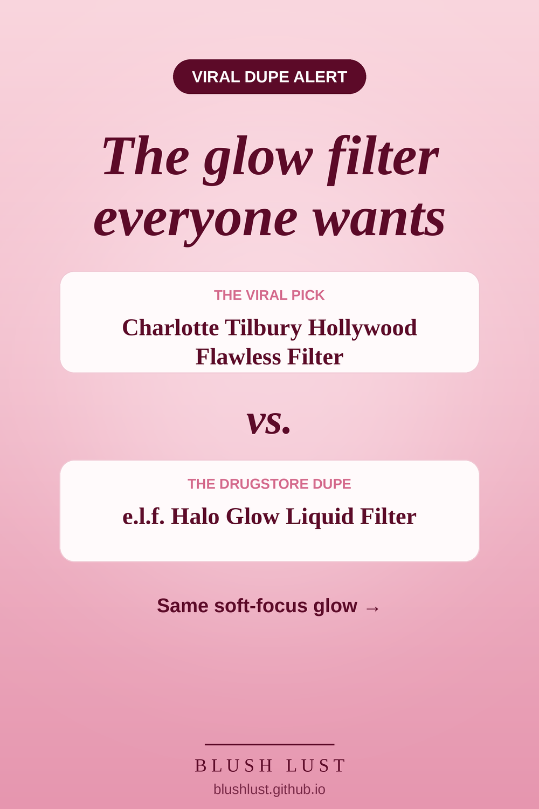

The glow filter, for less
Probably the most famous dupe on the internet. A glowy, blurring liquid you wear under foundation, mixed in, or alone for a soft-focus finish.
This post contains affiliate links. If you buy through them, we may earn a small commission at no extra cost to you. As an Amazon Associate I earn from qualifying purchases.
e.l.f. Halo Glow Liquid Filter
The viral pickCharlotte Tilbury Hollywood Flawless Filter
vs.
The dupee.l.f. Halo Glow Liquid Filter

See today’s price on Amazon.ca →
Comparisons reflect what beauty shoppers commonly say, not lab testing. Shades and formulas vary — check reviews before you buy.
More complexion dupes
Featured in: The Glow Edit: 8 Drugstore Dupes for Lit-From-Within Skin →
Featured in: Gifts for the Glow Girl: 8 Viral Glow Dupes Under $20 →